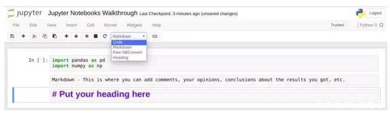

一、介绍
笔记本电脑将基于控制台的方法扩展到了一个定性的新方向，提供了一个适合捕获整个计算过程的基于Web的应用程序：开发，记录和执行代码，以及传达结果。Jupyter笔记本结合了两个组件：
Web应用程序：基于浏览器的工具，用于交互式创作文档，其中包含解释性文本，数学，计算及其富媒体输出。
Notebook文档：Web应用程序中可见的所有内容的表示，包括计算的输入和输出，说明文本，数学，图像和对象的富媒体表示。
二、安装
anaconda
anaconda指的是一个开源的Python发行版本，其包含了conda、Python等180多个科学包及其依赖项。可以帮助python开发者省去很多安装科学包的工作。
1. 下载 Anaconda
去Anaconda的下载地址下载对应python版本的Anaconda安装文件。
2，安装 Anaconda
1）打开terminal；
2）打开下载文件的位置：
cd Downloads/
3）运行 .sh 文件：
bash Anaconda3-5.2.0-Linux-x86_64.sh
4）进入注册信息页面，输入yes；
5）阅读注册信息，然后输入yes；查看文件即将安装的位置，按enter，即可安装
6）安装完成后，收到加入环境变量的提示信息，输入yes
7）提示信息“Do you wish to proceed with the installation of Microsoft VSCode? [yes|no]”，输入no；
8）重启终端，即可使用Anaconda3；
9）若在终端输入 python，仍然会显示Ubuntu自带的python版本，我们执行：
sudo gedit ~/.bashrc
export PATH="/home/xupp/anaconda3/bin:$PATH"
修改终端的默认 python 为 anaconda，至此全部完成。
10）我们还可以输入以下命令可以开启anaconda-navigator，这里面集成了Anaconda自带的一些工具。（注意，开启的时间可能会比较长，耐心等待即可）
安装Jupyter Notebook
对于新用户，推荐Anaconda可以方便地安装Python，Jupyter笔记本以及其他常用的科学计算和数据科学软件包。
使用pip安装
Jupyter安装需要Python 3.3或更高版本，或Python 2.7。IPython 1.x，包括后来成为Jupyter的部分，是支持Python 3.2和2.6的最后一个版本。
作为现有的Python用户，您可能希望使用Python的包管理器pip而不是Anaconda来安装Jupyter。
首先，确保你拥有最新的点数;旧版本可能在某些依赖项上遇到问题：
pip3 install --upgrade pip
然后使用以下命令安装Jupyter Notebook：
pip3 install jupyter
启动Jupyter Notebook
jupyter notebook
可以在浏览器中看到笔记本打开。
如何使用自定义IP或端口启动Notebook？
默认情况下，笔记本服务器在端口8888上启动。如果端口8888不可用或正在使用，则笔记本服务器将搜索下一个可用端口。您也可以手动指定端口。在此示例中，我们将服务器的端口设置为9999：
jupyter notebook -- port 9999
如何在不打开浏览器的情况下启动Notebook服务器？
无需打开Web浏览器即可启动笔记本服务器
jupyter notebook -- no-browser
笔记本服务器使用--help标志为其他命令行参数提供帮助消息：
jupyter notebook --help
三、构成
Jupyter笔记本是一个交互式计算环境，使用户能够创作笔记本文档，包括： - 实时代码 - 交互式小部件 - 绘图 - 叙事文本 - 方程式 - 图像 - 视频
这些文档提供了一个完整且独立的计算记录，可以转换为各种格式，并使用电子邮件，Dropbox，版本控制系统（如git /GitHub）或nbviewer.jupyter.org与其他人共享。
组件
Jupyter笔记本结合了三个组件：
- 笔记本Web应用程序 ：交互式Web应用程序，用于交互式编写和运行代码以及编写笔记本文档。
- 内核 ：由笔记本Web应用程序启动的独立进程，它以给定语言运行用户代码并将输出返回给笔记本Web应用程序。 内核还处理诸如交互式小部件的计算，选项卡完成和内省之类的事情。
- Notebook文档 ：自包含文档，其中包含笔记本Web应用程序中可见的所有内容的表示，包括计算的输入和输出，叙述文本，方程式，图像和对象的富媒体表示。 每个笔记本文档都有自己的内核。
四、界面
打开笔记本后，你会看到顶部有三个选项卡：Files、Running 和 Clusters。其中，Files 基本上就是列出所有文件，Running 是展示你当前打开的终端和笔记本，Clusters 是由 IPython 并行提供的。
要打开一个新的 Jupyter 笔记本，点击页面右侧的「New」选项。你在这里会看到 4 个需要选择的选项：Python3、Text File、Folder、Terminal。
- 选择 Text File，你会得到一个空面板。你可以添加任何字母、单词和数字。其基本上可以看作是一个文本编辑器（类似于 Ubuntu 的文本编辑器）。你可以在其中选择语言（有很多语言选项），所以你可以在这里编写脚本。你也可以查找和替换该文件中的词。
- 选择 Folder 选项时，你会创建一个新的文件夹，你可以在其中放入文件，重命名或删除它。各种操作都可以。
- Terminal 完全类似于在 Mac 或 Linux 机器上的终端（或 Windows 上的 cmd）。其能在你的网络浏览器内执行一些支持终端会话的工作。在这个终端输入 python，你就可以开始写你的 Python 脚本了！
- 选择python3，可以从导入最常见的 Python 库开始：pandas 和 numpy。在代码上面的菜单中，你有一些操作各个单元的选项：添加、编辑、剪切、向上和向下移动单元、运行单元内的代码、停止代码、保存工作以及重启 kernel。 
上图所示，有四个选项：
------code：写代码的地方
------markdown：写文本的地方，可以在运行一段代码后添加结论和注释
------Raw NBConvert：可以将botebook转换成另一种格式（比如HTML）的命令行工具
------Heading：添加标题的地方，可将不同章节分开。
五、使用Jupyter Notebooks的神奇功能
Jupyter Notebooks的开发者已经在其中内置了一些预定义的神奇功能，可以运行下面的命令来查看功能列表（注：%符号通常不需要，因为自动补齐功能通常是开启的）
%lsmagic
你会看到列出了很多选择，你甚至可能能认出其中一些！%clear、%autosave、%debug 和 %mkdir 等功能你以前肯定见过。现在，神奇的命令可以以两种方式运行：
- 逐行方式
- 逐单元方式
逐行方式是执行单行的命令，逐单元方式则是执行不止一行的命令，而是执行整个单元中的整个代码块
在逐行方式中，所有给定的命令必须以%开头，而在逐单元方式中，所有的命令必须以%%开头
示例：
逐行方式：%time a = range(10)
逐单元方式：%%timeit a = range (10)min(a)
六、键盘快捷键
快捷方式是 Jupyter Notebooks 最大的优势之一。当你想运行任意代码块时，只需要按 Ctrl+Enter 就行了。Jupyter Notebooks 提供了很多键盘快捷键，可以帮助我们节省很多时间.
Jupyter Notebooks 提供了两种不同的键盘输入模式——命令和编辑。命令模式是将键盘和笔记本层面的命令绑定起来，并且由带有蓝色左边距的灰色单元边框表示。编辑模式让你可以在活动单元中输入文本（或代码），用绿色单元边框表示。可以分别使用 Esc 和 Enter 在命令模式和编辑模式之间跳跃。
进入命令模式之后（此时没有活跃单元），可以尝试以下快捷键：
A 会在活跃单元之上插入一个新的单元，B 会在活跃单元之下插入一个新单元。
连续按两次 D，可以删除一个单元。
撤销被删除的单元，按Z
Y 会将当前活跃的单元变成一个代码单元。
按住 Shift +上或下箭头可选择多个单元。在多选模式时，按住 Shift + M 可合并你的选择。
按 F 会弹出「查找和替换」菜单。
处于编辑模式时（在命令模式时按 Enter 会进入编辑模式），可以尝试以下快捷键：
- Ctrl + Home 到达单元起始位置。
Ctrl + S 保存进度。
Ctrl + Enter 运行整个单元块。
Alt + Enter 不止会运行单元块，还会在下面添加一个新单元。
Ctrl + Shift + F 打开命令面板。
要查看键盘快捷键完整列表，可在命令模式按「H」或进入「Help > Keyboard Shortcuts」。
七、关于Jupyter Notebook扩展
安装扩展
1，pip安装
pip install jupyter_contrib_nbextensions
安装相关的 JavaScript 和 CSS 文件：
jupyter contrib nbextension install --user
2，conda安装
conda install -c conda-forge jupyter_contrib_nbextensions
完成以上命令后，会在 Jupyter Notebook 主页顶部看见一个 Nbextensions 选项卡。点击一下，即可看到很多可在你的项目中使用的扩展。要启用某个扩展，只需勾选。
以下是四个比较有用的扩展：
Code prettify：它能重新调整代码块内容的格式并进行美化。
Printview：这个扩展会添加一个工具栏按钮，可为当前笔记本调用 jupyter nbconvert，并可以选择是否在新的浏览器标签页显示转换后的文件。
Scratchpad：这会添加一个暂存单元，让你可以无需修改笔记本就能运行你的代码。当你想实验你的代码但不想改动你的实时笔记本时，这会是一个非常方便的扩展。
Table of Contents (2)：这个很棒的扩展可以收集你的笔记本中的所有标题，并将它们显示在一个浮动窗口中。
八、保存和共享
进入「Files」菜单，会看到「Download As」选项：
可以用各种可选格式保存你的笔记本。其中最常用的是 .ipynb 文件和 .html 文件。使用 .ipynb 文件可让其他人将你的代码复制到他们的机器上，使用 .html 文件能以网页格式打开（当需要保存嵌入在笔记本中的图片时会很方便）。
也可以使用 nbconvert 选项手动将你的笔记本转换成 HTML 或 PDF 等格式。
也可以使用 jupyterhub，地址：https://github.com/jupyterhub/jupyterhub。其能让你将笔记本托管在它的服务器上并进行多用户共享。很多顶级研究项目都在使用这种方式进行协作。